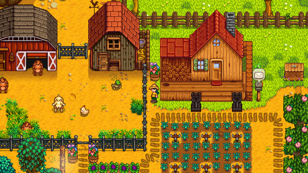
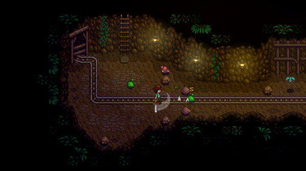
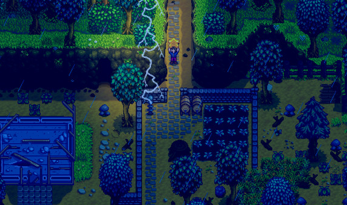
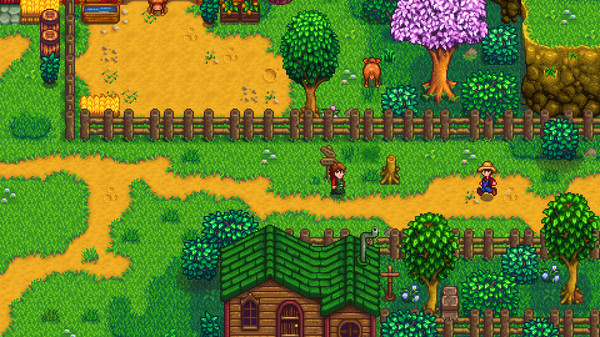

GAMING WORLD
GAMING WORLD




Stardew Valley is an open-ended country-life RPG!
You've inherited your grandfather's old farm plot in Stardew Valley. Armed with hand-me-down tools and a few coins, you set out to begin your new life. Can you learn to live off the land and turn these overgrown fields into a thriving home? It won't be easy. Ever since Joja Corporation came to town, the old ways of life have all but disappeared. The community center, once the town's most vibrant hub of activity, now lies in shambles. But the valley seems full of opportunity. With a little dedication, you might just be the one to restore Stardew Valley to greatness!
Turn your overgrown field into a lively farm!
Raise animals, grow crops, start an orchard, craft useful machines, and more! You'll have plenty of space to create the farm of your dreams.
8 Player Farming!
Invite 1-7 players to join you in the valley online! Players can work together to build a thriving farm, share resources, and improve the local community. As more hands are better than one, players have the option to scale profit margin on produce sold for a more challenging experience.
Improve your skills over time
As you make your way from a struggling greenhorn to a master farmer, you'll level up in 5 different areas: farming, mining, combat, fishing, and foraging. As you progress, you'll learn new cooking and crafting recipes, unlock new areas to explore, and customize your skills by choosing from a variety of professions.
Become part of the local community.
With over 30 unique characters living in Stardew Valley, you won't have a problem finding new friends! Each person has their own daily schedule, birthday, unique mini-cutscenes, and new things to say throughout the week and year. As you make friends with them, they will open up to you, ask you for help with their personal troubles, or tell you their secrets! Take part in seasonal festivals such as the luau, haunted maze, and feast of the winter star.
Source: Steam
OS
Windows 10
Processor
2 Ghz or greater
Memory
2 GB RAM
Graphics
256 mb video memory, shader model 3.0+
DirectX
Version 10
Storage
500MB available space

You've inherited your grandfather's old farm plot in Stardew Valley. Armed with hand-me-down tools and a few coins, you set out to begin your new life. Can you learn to live off the land and turn these overgrown fields into a thriving home?
Relaxing
RPG
Farming Sim
Building
Multiplayer
2D
Release Date
27 February 2016
Developers
ConcernedApe
Platforms
Nintendo Switch, Nintendo Switch 2, Playstation 4, Playstation Vita, Xbox One, Xbox Cloud Gaming, Microsoft Windows, Amazon Luna, Android, iOS, macOS, Linux, Geforce Now
Publisher
ConcernedApe